Status brief · prototype · November 2026
Quantum Virtual Tumors
Virtual lung tumours, grown by a biology model and placed into real chest CT scans, to test cancer detection AI.
Virtual lung tumours, grown by a biology model and placed into real chest CT scans, to test cancer detection AI.
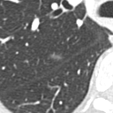
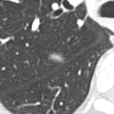
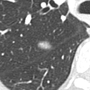
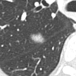
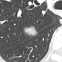
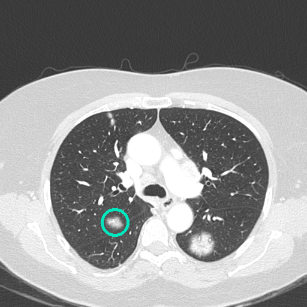
whereDetection AI has to be tested on many cases, including rare ones, and every result has to be checked. Real patient data is scarce for rare tumours, slow to annotate and carries privacy risk. A virtual tumour comes with its exact position, size and growth rate, so the AI's answer can be checked against it.
The tumours, their growth and the images are made classically. Quantum computing adds two things to every virtual case:
Every virtual tumour is drawn on a real IBM quantum computer, together with a physics test showing the draw really came from quantum hardware. That gives each case a record of where it came from, so it is easily auditable: any later change to the case is visible.
Each tumour's starting shape comes from a small quantum simulation whose entanglement check passed. At today's size a normal computer can still reproduce it. The slot is there so growth can move onto quantum hardware once that is worthwhile.
What it does not do: quantum computing does not make the images look more realistic. Image quality comes from the classical growth model and scanner physics.
Each row is one virtual tumour. The first image is the full lung scan at baseline, with the tumour circled. The next four zoom in and show it growing from its quantum starting shape to the baseline scan and a follow-up 90 days later.
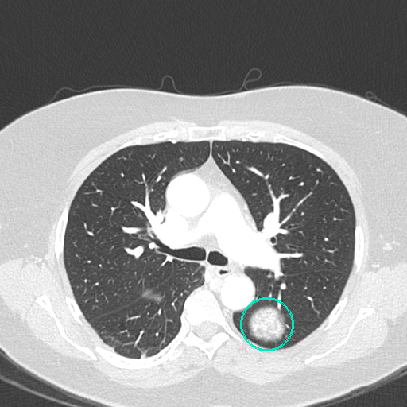
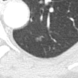
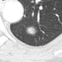
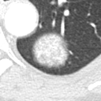
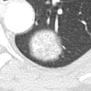
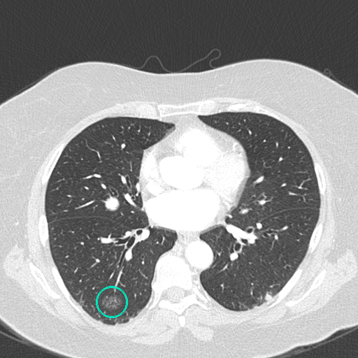
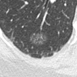
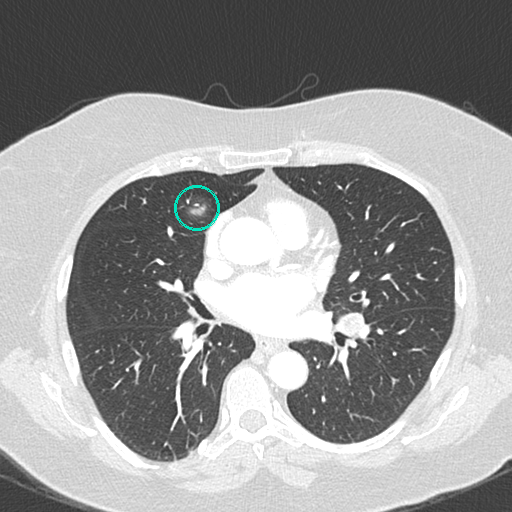
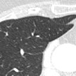
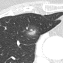
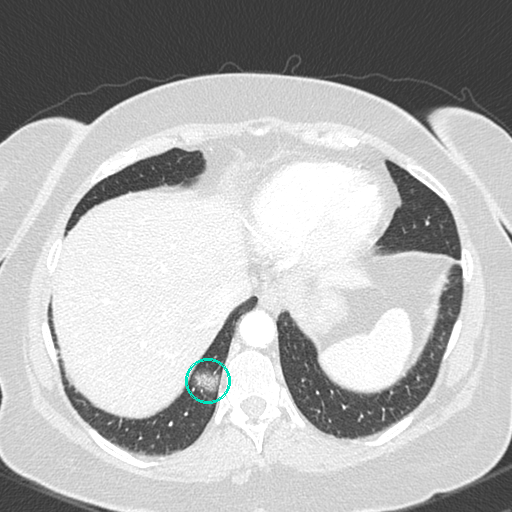
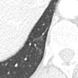
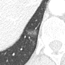
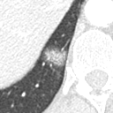
Why this scan looks different: the slice is at the bottom of the lungs, where the diaphragm pushes up into the chest. The large bright area is the liver; the dark lung is a thin crescent behind it. CT images are viewed from the patient's feet, so the patient's right lung is on the left of the picture. The tumour sits against the lung wall, which the growth model treats as a hard boundary, so it flattens along the wall instead of growing into it.
A working prototype for lung CT, run once on IBM hardware. The pipeline is not yet closed end to end, and nothing has been validated by radiologists.
No radiologist reader test, no comparison against real nodules, no AI study.
One host patient, one cancer, CT only. Large tumours still come out too round.
One quantum job per run: no repeats, no error bars, and the audit record is not yet attached to each case.
The project grows in two directions: across more cancers, and from whole populations down to one patient.
The engine is built from swappable layers: a statistics rulebook, a growth model, a host scan with its scanner fingerprint, and a renderer. A new cancer needs a new rulebook from published data, growth parameters from the literature, and host scans.
| Cancer | Imaging | Why it fits |
|---|---|---|
| Breast | Mammography, tomosynthesis | FDA's VICTRE trial set the precedent for virtual breast lesions; large screening market. |
| Liver | CT, MR | Lesions sit in a single organ with clear boundaries; contrast phases add realism tests. |
| Brain (glioma) | MR | Glioma growth models are among the best studied; MR is a core Siemens modality. |
| Prostate | MR | Standardised reporting (PI-RADS) gives a ready-made rulebook. |
| Colorectal | CT colonography | Polyp-to-cancer progression is a natural growth sequence. |
Virtual cohorts of patients and tumours to test AI tools and scanners. Prototype for lung CT.
A tumour model fitted to one patient's scans, predicting how it will look and grow, updated at every visit.
Tumour, organ, treatment response and scanner physics in one model per patient, used for planning and monitoring.
Each stage of today's pipeline is one layer of that twin: anatomy (where), biology rules (what), traceable origin (trust), growth (dynamics), imaging physics (how it appears) and validation (does it hold up). For one patient, the twin would place virtual tumours into their own scan, fit growth to their earlier scans and simulate many possible futures, with and without treatment, to support follow-up and radiotherapy planning.
Where quantum computing fits: simulating many futures is a sampling problem, and classical computers handle it today. IBM's public roadmap targets error-corrected quantum computers around 2029. The twin is quantum-ready: the growth layer can move onto quantum hardware if and when that pays off, and the rest keeps working either way.
I want to do this as real science: done the right way, together with other researchers, and with one clear goal in mind.
The goal is a measured answer to one question: can virtual cohorts stand in for scarce real cases when testing detection AI?
The script picks the least busy IBM machine and skips qubits and connections that today's calibration marks as poor. quantum computing
One quantum job draws size, type, margin and lung lobe for 12 tumours from published statistics, including 2 parent and daughter pairs, and runs the Bell test in the same job. quantum computing
A second job runs three experiments on separate parts of the chip. The main one, a quantum cellular automaton, gives each tumour its starting shape and is checked for entanglement. quantum computing
A cell-level growth model grows each tumour day by day inside real lung boundaries, tuned to published doubling times. Snapshots act as follow-up scans. classical
Each tumour is placed in a public chest CT (LIDC-IDRI case 0481) with that scanner's measured sharpness and noise. Shape and density come from a model fitted to 41 real nodules; no patient voxels are copied. classical
A self-contained page shows the 12 cases with full slice, zoom, growth player and plain labels saying what is quantum computing and what is classical. classical